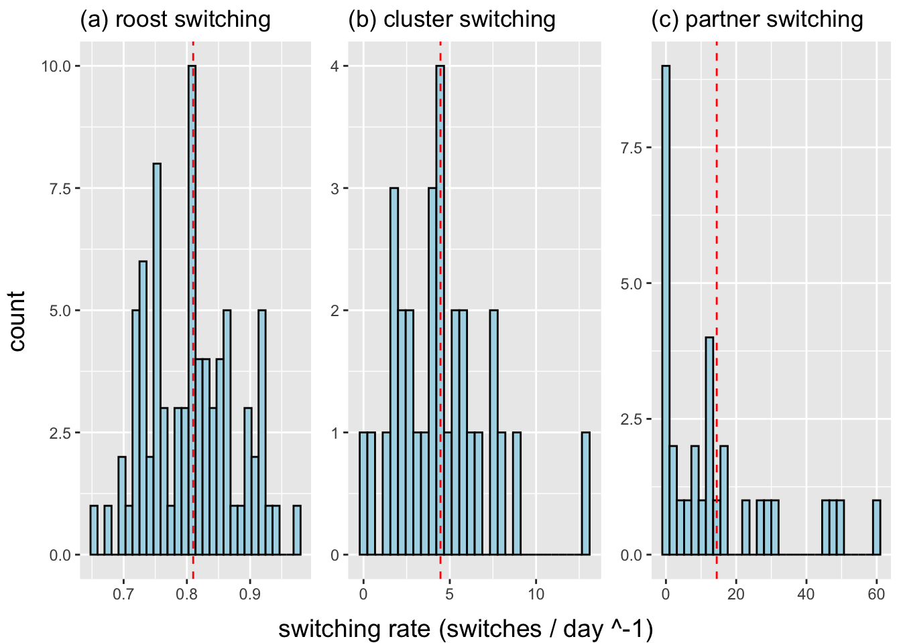

library(tidyverse)
library(gridExtra)
library(grid)Data Analysis Replication
Hierarchically embedded scales of movement shape the social networks of vampire bats
Original Article: Published:24 April 2024 https://doi.org/10.1098/rspb.2023.2880
This research investigates how individual variation in movement across nested spatial scales (roosts, clusters, and grooming partners) influences social connectedness in vampire bats. Using agent-based modeling, the study shows that movement within roosts plays a larger role in shaping grooming networks than roost switching, revealing how overlooked spatial scales can lead to misinterpretation of social relationships.
This document attempts to replicate the figures and analytical visuals from that article.
Before starting the analysis, we need to load the necessary packages we’ll be using.
Figure 2
This first figure shows the distribution of empirical switching rate estimates across bats.
First, upload the roost data using tidyverse functions and take a quick look at it. It might be a bit confusing, but note that roost_sw is both the name of the file and the variable containing the switching data needed for the histogram. Use ggplot to create the figure, including the previously calculated x-intercept value in the plot. Axis labels are set to NULL since all histograms will be combined later.
Roost switching*
f1 <- "https://raw.githubusercontent.com/anonymousscientist8/scales-of-movement/refs/heads/main/graphs_and_analyses/FIGURE_2/roost_sw.csv"
roost_sw <- read_csv(f1, col_names = TRUE)
head(roost_sw)# A tibble: 6 × 3
...1 roost_sw Bats_w
<dbl> <dbl> <chr>
1 1 0.8 F512
2 2 0.822 F514
3 3 0.824 F516
4 4 0.856 F517
5 5 0.862 F518
6 6 0.858 F519 plot1 <- ggplot() +
geom_histogram(data = roost_sw,
aes(x = roost_sw),
bins = 30,
fill = "light blue",
colour = "black")+
geom_vline(data = roost_sw,
aes(xintercept = 0.81),
color = "red",
linetype = "dashed")+
xlab(NULL)+
ylab(NULL)+
ggtitle("(a) roost switching")The same process is applied to cluster_sw, with the same confusing situation regarding the title and data.
Cluster switching*
f2 <- "https://raw.githubusercontent.com/anonymousscientist8/scales-of-movement/refs/heads/main/graphs_and_analyses/FIGURE_2/cluster_sw.csv"
cluster_sw <- read_csv(f2, col_names = TRUE)
head(cluster_sw)# A tibble: 6 × 3
...1 cluster_sw bats_i
<dbl> <dbl> <chr>
1 1 4.31 blx
2 2 6.25 cldw
3 3 3.99 bxdlx
4 4 7.40 cdw
5 5 5.39 cnone
6 6 4.79 bs plot2 <- ggplot() +
geom_histogram(data = cluster_sw,
aes(x = cluster_sw),
bins = 30,
fill = "light blue",
colour = "black")+
geom_vline(data = cluster_sw,
aes(xintercept = 4.46),
color = "red",
linetype = "dashed")+
xlab(NULL)+
ylab(NULL)+
ggtitle("(b) cluster switching")Finally, repeat the process for partner_sw, keeping the same confusing details. However, this time we will multiply by 24, as the data was collected consecutively over an hour-long period within a 24-hour day.
Partner switching*
f3 <- "https://raw.githubusercontent.com/anonymousscientist8/scales-of-movement/refs/heads/main/graphs_and_analyses/FIGURE_2/partner_sw.csv"
partner_sw <- read_csv(f3, col_names = TRUE)
partner_sw$partner_sw <- partner_sw$partner_sw * 24
head(partner_sw)# A tibble: 6 × 3
...1 partner_sw bats_i
<dbl> <dbl> <chr>
1 1 10.2 add
2 2 31.8 cnone
3 3 11.5 adldd
4 4 8.09 cdw
5 5 12.8 cldw
6 6 60.0 ax plot3 <- ggplot() +
geom_histogram(data = partner_sw,
aes(x = partner_sw),
bins = 30,
fill = "light blue",
colour = "black")+
geom_vline(data = partner_sw,
aes(xintercept = 14.46),
color = "red",
linetype = "dashed")+
xlab(NULL)+
ylab(NULL)+
ggtitle("(c) partner switching")Now, combine all the plots using the grid.arrange function and add the axis titles that were not included earlier.
Plotting*
grid.arrange(
arrangeGrob(plot1, plot2, plot3, ncol = 3), left = textGrob("count", rot = 90, gp = gpar(fontsize = 14)),
bottom = textGrob("switching rate (switches / day ^-1)", gp = gpar(fontsize = 14))
)
Discussion*

Figuring out this plot turned out to be less difficult than I initially expected—the most challenging part was actually understanding the datasets themselves. The way the information was labeled made things a bit confusing at first. For the x-intercepts, I added them manually based on the summary statistics seen in the article. The original figure seemed to use a more formal analysis to derive those values. So in that case, I took a bit of a shortcut.
Roost switching and cluster switching plots came together smoothly and matched the originals without much trouble. Partner switching, on the other hand, was more complicated. The initial graph I created looked nothing like the one in the paper. I even thought they might have uploaded the wrong dataset since there were multiple files with the same name. I tried using an alternative dataset, summing values and grouping by name, but still got the same outcome.
Eventually, I realized they had multiplied the partner switching data by 24 to reflect a full 24-hour period. Overall, I was able to recreate this figure to closely match the original.
Figure 3
This next figure displays empirical data showing how movements within roosts predict the number of grooming partners.
To begin creating this figure, load the gd and cent datasets and take a quick look at their structure.
Loading*
f4 <- "https://raw.githubusercontent.com/anonymousscientist8/scales-of-movement/refs/heads/main/graphs_and_analyses/FIGURE_3/gd.csv"
gd <- read_csv(f4, col_names = TRUE)
head(gd)# A tibble: 6 × 6
...1 bat n cs ps ps2
<dbl> <chr> <dbl> <dbl> <dbl> <dbl>
1 1 ad 8 1.96 0 0
2 2 add 23 4.20 0.427 0.386
3 3 addld 19 7.64 0.0756 0.0677
4 4 addldd 27 6.82 0.647 0.613
5 5 adld 27 8.12 1.19 1.10
6 6 adldd 23 2.40 0.480 0.457 f5 <- "https://raw.githubusercontent.com/anonymousscientist8/scales-of-movement/refs/heads/main/graphs_and_analyses/FIGURE_3/centrality.csv"
cent <- read_csv(f5, col_names = TRUE)
head(cent)# A tibble: 6 × 4
...1 bats centrality roost_switch
<dbl> <chr> <dbl> <dbl>
1 2 F570 12 0.75
2 3 F571 18 0.756
3 4 F572 10 0.772
4 5 F577 13 0.752
5 6 F578 13 0.754
6 7 F583 13 0.717After reviewing the datasets, we need to update the column titles for clarity. While we didn’t do this in the previous figure, this one is more complex and requires additional layers for proper analysis.
Using the switching and grooming data, we’ll define three categories—Roost, Cluster, and Partner Switching—and ensure these edits are saved in a new version of the dataframe called gd2.
We can verify that the changes were successful by viewing the updated dataset.
Organizing*
switch <- c(cent$roost_switch,gd$cs,gd$ps2)
groomed <- c(cent$centrality,gd$n,gd$n)
type <- character(length(groomed))
n1 <- length(cent$centrality)
n2 <- length(gd$cs)
n3 <- length(type)
type[1:n1] <- "Roost Switching (switches day^-1)"
type[(n1+1):(n1+n2)] <- "Cluster Switching (switches day^-1)"
type[(n1+n2+1):n3] <- "Partner Switching (switches h^-1)"
gd2 <- data.frame(type = type, switch = as.numeric(switch), groomed = as.numeric(groomed))
head(gd2) type switch groomed
1 Roost Switching (switches day^-1) 0.7500000 12
2 Roost Switching (switches day^-1) 0.7557252 18
3 Roost Switching (switches day^-1) 0.7716049 10
4 Roost Switching (switches day^-1) 0.7517730 13
5 Roost Switching (switches day^-1) 0.7537313 13
6 Roost Switching (switches day^-1) 0.7165775 13Now for the fun part! First, we’ll organize the data frame types to match the levels used in the original article. To make things easier, we’ve already labeled the datasets with the titles we plan to use in the final figure. Generate the figure using ggplot, including a 95% confidence interval.
Plotting*
gd2$type <- factor(gd2$type, levels = c(
"Roost Switching (switches day^-1)",
"Cluster Switching (switches day^-1)",
"Partner Switching (switches h^-1)"
))
ggplot(data = gd2, aes(x = switch, y = groomed, color = type)) +
geom_point() +
geom_smooth(method = 'glm', method.args = list(family = "quasipoisson")) +
ylab("count of partners groomed") +
facet_wrap(~type, nrow = 1, scales = "free", strip.position = "bottom")+
theme(legend.position = "none")Discussion*

This one also ended up being pretty close to the original. Once again, the dataset names made the analysis a bit tricky to navigate. One of the main challenges I faced was relabeling the “type” variable. I know the original authors used a loop for this, but I wanted a more straightforward approach since I’m not a big fan of loops. Once I got past the labeling hurdle, I ran into an issue where the colors and the order of categories in my plot didn’t match the original. To fix that, I added a line of code to reorder the data, which helped align my graph more closely with the published version. Almost forgot to mention that I experimented with a few statistical tests to recreate the 95% confidence intervals shown in the paper, and the quasipoisson model ended up providing the best fit.
Figure 4
This next figure illustrates the effects on grooming out degree centrality when individual variation in movement propensity is independent across spatial scales.
The data we’re uploading here will be used for both Figure 4 and Figure 5. It will be split into two separate data frames: d0 for the Figure 4 graph and d1 for the Figure 5 graph.
Loading*
f6 <- "https://raw.githubusercontent.com/anonymousscientist8/scales-of-movement/refs/heads/main/graphs_and_analyses/FIGURES_4_5_S2_S3/degree_est0.csv"
degree_est00 <- read_csv(f6, col_names = TRUE) |>
mutate(label= "(a) individually variable rates of switching roost, cluster, and partner across 200 bats")
f7 <- "https://raw.githubusercontent.com/anonymousscientist8/scales-of-movement/refs/heads/main/graphs_and_analyses/FIGURES_4_5_S2_S3/degree_est0.csv"
degree_est0 <- read_csv(f7, col_names = TRUE) |>
mutate(label= "individually variable rates of switching roost, cluster, and partner across 200 bats")
f8 <- "https://raw.githubusercontent.com/anonymousscientist8/scales-of-movement/refs/heads/main/graphs_and_analyses/FIGURES_4_5_S2_S3/degree_est1.csv"
degree_est1 <- read_csv(f8, col_names = TRUE) |>
mutate(label= "(a) individually variable rates of roost switching with 200 bats")
f9 <- "https://raw.githubusercontent.com/anonymousscientist8/scales-of-movement/refs/heads/main/graphs_and_analyses/FIGURES_4_5_S2_S3/degree_est2.csv"
degree_est2 <- read_csv(f9, col_names = TRUE) |>
mutate(label= "(b) individually variable rates of cluster switching with 200 bats")
f10 <- "https://raw.githubusercontent.com/anonymousscientist8/scales-of-movement/refs/heads/main/graphs_and_analyses/FIGURES_4_5_S2_S3/degree_est3.csv"
degree_est3 <- read_csv(f10, col_names = TRUE) |>
mutate(label= "(c) individually variable rates of partner switching with 200 bats")
d0 <- degree_est00
d1 <- rbind(degree_est1,degree_est2,degree_est3)To graph the data for d0, first convert it to a longer format and relabel the scales with their correct names. Once those changes are complete, use ggplot to create a violin plot overlaid with a boxplot for each scale label.
Graphing*
head(d0)# A tibble: 6 × 5
...1 scale.rs. scale.cs. scale.ps. label
<chr> <dbl> <dbl> <dbl> <chr>
1 X1 0.0393 0.0629 0.0229 (a) individually variable rates of switch…
2 X2 0.0343 0.0477 0.0213 (a) individually variable rates of switch…
3 X3 0.0329 0.0565 0.0243 (a) individually variable rates of switch…
4 X4 0.0432 0.0441 0.0239 (a) individually variable rates of switch…
5 X5 0.0432 0.0448 0.00901 (a) individually variable rates of switch…
6 X6 0.0326 0.0521 0.0266 (a) individually variable rates of switch…d0 |> pivot_longer(scale.rs.:scale.ps.,
names_to = "t",
values_to = "coefficient") |>
mutate(
type = case_when(
t == "scale.rs." ~ "1. roost switching",
t == "scale.cs." ~ "2. cluster switching",
t == "scale.ps." ~ "3. partner switching")) |>
mutate(type= fct_rev(factor(type))) |>
ggplot(aes(x = type, y = coefficient, color = type)) +
facet_wrap(~label, ncol=1)+
coord_flip()+
geom_violin(width = 0.25) +
geom_boxplot(width = 0.1) +
theme(legend.position = "none") +
xlab("") +
ylab("effect on grooming degree (standardized coefficient)") +
scale_color_manual(values= c("blue", "dark green", "red"))Discussion*

This one was definitely one of the toughest figures to recreate. The data was incredibly dense—with tons of files that didn’t even appear to be used in the final figure—so just figuring out what to include took some time. Once I managed to process the right data, the initial plots came out way too large, so I adjusted the sizing to better match the original. I also ran into issues with the colors being out of order, which I fixed by adding a scale to control the color mapping. In the end, the figure came out pretty close to the original, though it still has a bit of a “knockoff” feel to it.
Figure 5
This figure compares observed effects to reference effects across 200 bats.
As mentioned earlier, this final graph is very similar to the previous one. This time, however, use the d1 dataframe instead.
Graphing*
head(d1)# A tibble: 6 × 5
...1 scale.rs. scale.cs. scale.ps. label
<chr> <dbl> <dbl> <dbl> <chr>
1 X1 0.0400 0.00660 0.0214 (a) individually variable rates of roost …
2 X2 0.0299 0.0107 0.0205 (a) individually variable rates of roost …
3 X3 0.0337 0.0164 0.0222 (a) individually variable rates of roost …
4 X4 0.0424 0.0129 0.0174 (a) individually variable rates of roost …
5 X5 0.0436 0.0131 0.0163 (a) individually variable rates of roost …
6 X6 0.0390 0.00712 0.0219 (a) individually variable rates of roost …d1 %>%
pivot_longer(scale.rs.:scale.ps.,
names_to = "t",
values_to = "coefficient") |>
mutate(
type = case_when(
t == "scale.rs." ~ "1. roost switching",
t == "scale.cs." ~ "2. cluster switching",
t == "scale.ps." ~ "3. partner switching")) |>
mutate(type= fct_rev(factor(type))) |>
ggplot(aes(x = type, y = coefficient, color = type)) +
facet_wrap(~label, ncol=1)+
coord_flip()+
geom_violin(width = 0.5) +
geom_boxplot(width = 0.1) +
theme(legend.position = "none") +
xlab("") +
ylab("effect on grooming degree (standardized coefficient)") +
scale_color_manual(values= c("blue", "dark green", "red"))
Discussion*

This is probably the figure that resembles the original the least. While they have a GitHub repository for the data sets, I chose not to rely on it and tried to figure things out on my own. Unfortunately, I couldn’t figure out how to generate the lines properly to match the original, and my scaling is a bit off as well. I wish there had been more detail in the article about how the lines in the graph were created, but I understand that they likely left it vague since they have a GitHub with all their figures. Still, my figure doesn’t look very close to the original. Also, I think there might be an error in the published article because I have no idea what that green or red dashed line is supposed to represent.
Conclusion
In summary, I was able to reproduce most of the visual figures closely, with some deviations here and there.